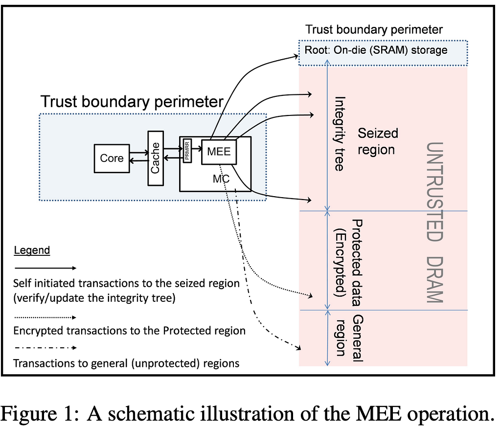
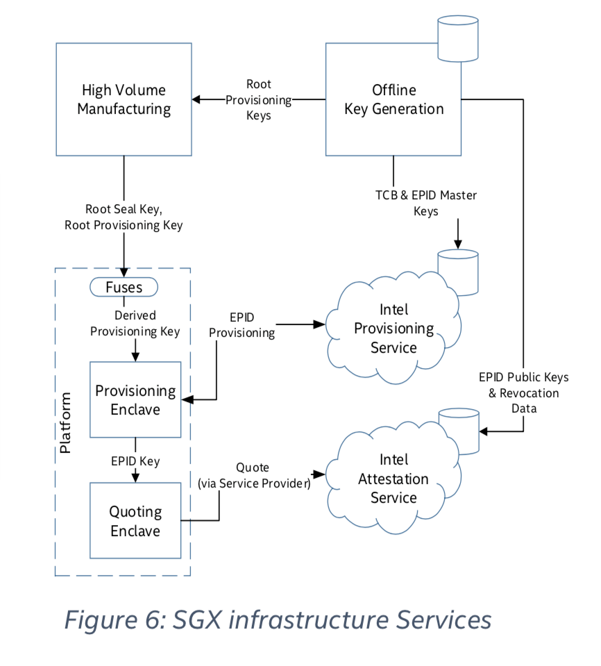

Intel SGX demystified — Part 1
Demystifying SGX — Part 1
When I started reading about Intel SGX a few years ago, I felt intimidated.
On the one hand, there was a lot of scary-sounding terminology; on the other hand, the results seemed magic.
In this article, I will break it down into non-scary concepts, something which would have helped past-me get a head start.
Before putting it all together, we'll look at the evolution of the relevant CPU features that made SGX possible and how cryptography was added to the mix. The key to the mystery is multitasking.
Note: This article assumes some basic knowledge of computer architecture.
Multitasking
Early CPUs, like the 8086, had a simple architecture without built-in support for running multiple programs simultaneously.
For example, when executing a ".COM" or ".EXE" program, the DOS operating system(OS) running on an 8086 gave complete control to the program, which could remove the OS altogether.
Windows 3.0 went a step further and achieved "cooperative multitasking". Programs written this way had to explicitly pause themselves and yield control to the OS, which could run another program. This approach has obvious problems, like one faulty program can cause the entire system to hang. It also places a lot of burden on the application developers.
The breakthrough for the PC came with the 80286, which added the "Protected mode", designed to give more control to the OSs over application software. "Protected mode" included "virtual memory" and "safe multitasking", which enabled OSs to implement "preemptive multitasking", used to this day by virtually all computer systems. The main difference from "collaborative multitasking" is that the OS can interrupt programs anytime and resume another program without either of them being aware. As a result, multitasking is no longer a concern of the programs.
To understand SGX, it's worth zooming in on how programs are executed in this model.
Preemptive multitasking
Programs start life as a set of instructions loaded in the main memory. Instructions are either executed directly in hardware, for example, adding the numbers found in two registers, or are "microcodes", which translate into a sequence of simpler instructions which eventually end up executed in hardware.
Note: By "addition being executed directly in hardware", it means that those two registers are literally connected with various electronic circuits, one of them being able to add their values.
As the program executes, the various registers in that CPU core will contain the current state. This includes the instruction pointer (IP) containing the address to the next instruction. While executing, the program can request to read or write more data from memory or execute I/O operations.
The "scheduler" can decide that another program is more important at any point in time, so it wants to use the CPU to execute it. If the current program is not over, it must be resumed later. The solution is to take a snapshot of its state, meaning all registers are saved in a data structure and written to memory. Then, when it's time to execute the same program again, it just carries on from the snapshot, which loads into all the correct registers.
To recap, the state of the program at the moment it has been paused consists of all the data in memory plus the execution snapshot, also known as the "Task State Segment" (TSS).
Virtual Memory
A prerequisite for "preemptive multitasking" is that each program must have its own "virtual memory space", which the OS must keep track of.
With this feature, each program can assume that it's running alone on a computer and has all available memory at its disposal. The OS is free to reorganise the physical memory to optimise it for the programs it is running, which includes writing a memory page to a "swap file" on the disk drive.
The "protected mode" of the 80286 was the first attempt to achieve this.
Eventually, the solution settled on using "Paged Virtual Memory". The component responsible for mapping between the physical and virtual addresses and checking access rights is the "Memory Management Unit" (MMU). The first MMU appeared in the 80386 CPU.
Access control
The other prerequisite for "preemptive multitasking" is controlling access to resources. The OS must be able to efficiently isolate programs from each other and stop them if they are trying to access resources illegally. If a program could remove the OS, multitasking would no longer be possible.
The "protected mode" of the 80286 introduced four privilege levels or "Rings". Ring 0 is the most privileged, where the OS Kernel runs, also called the "Supervisor mode". User applications typically run at Ring 3, or "User mode".
When the OS crashes, all user programs will stop. When a user program crashes, nothing else should be affected. Also, some instructions can only be called by programs running in Ring 0, and programs with lower privileges cannot access some resources.
A process can access more privileged resources only through special functions that the OS controls called "call gates". This mechanism has evolved and is now called "system calls" or "syscalls".
This Ring based mechanism ultimately gives control to the kernel to set up a sandbox for user programs. Everything a "user mode" program does has to go through the kernel and is restricted. It can't directly perform I/O operations, allocate memory, play sounds, or even display something on the screen. When the program closes, all resources are automatically freed by the kernel.
In the Windows 95 days, user programs routinely crashed the entire system. This was because the sandboxing was leaky for backwards compatibility reasons.
To recap, the MMU limits a program to only accessing or modifying its own memory address space. In addition, the "Rings" model, when used properly by the kernel, prevents it from directly manipulating other resources like hardware devices.
Virtualisation
Years went by, and virtual machines (VMs) started appearing. VMs are "virtualised" computers which run an OS. This highlights an immediate dilemma. Before VMs, the OS ran at Ring 0, where it could control all resources, which is no longer a valid assumption for a "Guest OS".
The initial solution was "Software Virtualisation", and it used techniques such as "binary translation", which means that the "Ring 0" instructions were replaced before execution.
A "Host OS" is running at Ring 0 and is also known as a "Hypervisor" or "Virtual Machine Monitor" (VMM).
The Pentium 4 CPU saw the introduction of "Hardware-assisted virtualisation" (Intel VT). This means there are now special instructions supported by the CPU and dedicated circuits that perform these translations more efficiently.
Evolution of trust
To finally understand SGX and put all the pieces together, we need to consider how trust evolved.
In the 8086/DOS days, all the software running on the computer was equally trusted and had full access to all resources.
Then it became apparent that software like the OS is more likely to be properly tested and behave as a user would expect, compared to random software installed from a floppy disk found in a magazine. So OS developers, in tandem with CPU manufacturers, came up with solutions, and today's computers are extremely stable.
Then, with the spread of virtual machines, it turned out that not even OSs are trustworthy and that there should be a trusted "hypervisor" to look after them and ensure they don't leak data to each other. This enabled cloud providers to service many users on much fewer physical machines. The users, who rent VMs in the cloud, generally trust the cloud providers to keep their data safe and not tamper with the computations.
Trust no one (except your own circuits)
Let's consider trust from the point of view of a chip manufacturer like Intel, which is building the CPU, a very complex circuit enclosed in a protective casing. Then we'll analyse how Intel can export that trust and make it a general-purpose primitive.
The CPU is added to a computer connected to peripherals where it is running software, all created by third parties. For example, it relies intimately on the "Memory Chip" to store data at an address and make it available for reading later. The CPU cannot calculate correct results if the memory chip malfunctions. In addition, a faulty chip can corrupt the instructions in the program itself, which also live in memory.
The question is: "What can I do, as a chip manufacturer, to guarantee the correct functioning of my device alone?".
Since the early days, CPUs and OSs have steadily descended into paranoia. The CPU has now reached the final stage, where it considers that everything is an adversary that threatens and watches it.
In this new world, a program running on a CPU cannot be tampered with even when the attacker controls the memory chip. Furthermore, no other process running on that CPU, including the OS, the hypervisor or the physical owner connecting measurement devices to the CPU pins, can read the internal state of that program. And finally, a program can prove to anyone that it is running in this way so that any results are authentic.
These are the requirements for Intel SGX.
Cryptography
The last piece of the puzzle is cryptography.
Let's rephrase the high-level requirements stated above using cryptographic primitives.
Authenticated encryption of the memory
If the memory chip was part of the CPU enclosing, it could be trusted not to tamper with the data or leak information. However, since it is not, the CPU must encrypt and authenticate the data it sends to the memory chips. This way, it can detect if the data it requests has been tampered with and simultaneously hide the program's internal state.
CPUS already have a circuit through which all memory access is performed. Therefore, this requirement can be implemented by extending the MMU with a "Memory Encryption Engine" (MEE), which can perform real-time authenticated encryption and decryption.

Assuming that each process has some unique encryption key, then the MEE, a trusted circuit in the CPU, can guarantee that any data it loads into the internal circuits is authentic and could not have been read in plaintext form by anyone else. This step is entirely transparent to the rest of the CPU, which can function normally.
The encryption is quite complex and is done with volatile keys that are erased once the computer is powered down.
When you read about "encrypted enclaves", it actually means that there is an encryption layer between the CPU, which functions normally, and the memory chips.
Authenticating the Microcode
Intel can trust the hardware it produces. But, an equally important CPU component is the Microcode, which implements the complex instructions a CPU executes.
The microcode must be upgradeable because, like any software, it can contain bugs. Therefore, for Intel to always be able to trust the hardware plus software package, it needs to ensure that only approved code can be loaded into the CPU.
To achieve this requirement, each CPU has a key inside it used to decrypt the update file. Intel owns the corresponding key used for encrypting new versions.
When researchers recently found vulnerabilities in SGX, Intel was able to fix them by pushing an update.
Attestation
The most complex aspect of Intel SGX is the "Attestation" process, which is the missing ingredient to the problem of proving that a program inside a specific CPU calculated a payload in complete privacy and isolation.
From a high level, this is a problem of establishing a trust chain from the payload to Intel. As long as the users, or the consumers of the service, trust Intel, they should be convinced of all the guarantees and that the program ran precisely as expected.
One of Intels' guarantees is that they cannot read or tamper with the data calculated on their CPUs.
Note: If you're having doubts about trusting a private company, remember that this model is similar to what forms the basis of HTTPS, which secures all internet traffic. Web browsers, and implicitly their users, trust private companies known as Certificate authorities (CA) not to issue certificates for a domain without an explicit request from the owner. For example, a rogue or hacked CA could generate a certificate for "www.mydomain.com", and then, if they are also able to trick the DNS on the victim's computer, they can man-in-the-middle (MITM) the traffic to "mydomain.com". The CAs don’t do this because their reputation is at stake. This practical combination of cryptography and reputation has revolutionised internet security. A corporation like Intel has a lot of reputation to defend.
Conceptually, an attested payload must be signed by a key bound to the program and the CPU where it was produced.
The first step is for the trusted CPU to calculate a cryptographic hash of the program. This is called "the measurement", and this value is added to a special register called "MRENCLAVE", where "MR" stands for "measurement".
To prove that a payload originated inside a specific CPU, Intel burns private keys into each CPU, which it uses to sign over the "MRENCLAVE" (and the microcode version). This signed report is called "The Quote".
This quote is then submitted to an Intel-provided service, the "Intel Attestation Service" (IAS), that checks that the signing key corresponds to a CPU it created. The service can also check whether the CPU and microcode version installed on it is known to have any vulnerabilities. If all checks pass, "the quote" is returned signed by Intels' well-known public key.

A person or software inspecting a recently signed quote can assert that a program with the hash "H" (aka "the enclave") was loaded inside a CPU considered secure by Intel.
The quote will also contain a key which, by construction, can only be known to the program with the hash "H" running on that CPU. A chain of trust all the way to Intel thus guarantees any payload signed by this key.
The simplified description above shows that this chain of trust has different links like digital signatures, cryptographic hashes, encryption, and physical hardware security.
Putting it all together
Intel CPUs already had security primitives designed to isolate programs from each other such as the "Ring" model for executing instructions and the Memory Management Unit. These were designed to allow operating systems to execute untrusted programs safely and later to enable hypervisors to run multiple untrusted VMs.
Adding cryptographic components such as the Memory Encryption Engine enabled a CPU to function as a "Trusted Execution Environment" (TEE). The Attestation protocol designed on top of these primitives creates a trust chain from Intel to virtually any program output. Intel assumes a role similar to a web "Certificate Authority", with the difference that it certifies computation results and not just identities.
I hope this perspective shows that "secure enclaves" are not some special magic chip protected by machine guns where data is processed encrypted.
It is more boring than that. It is merely another iteration in the decades-long journey to add security features on top of existing processing circuits.
Final note
To illustrate the main point, I had to simplify severely, like ignoring other CPU manufacturers, sacrificing accuracy, or boiling down extremely complex topics into a short line.
The “Demystifying SGX” Series
In part 1, we look at the hardware features behind SGX.
In part 2, we look at the features that make CPUs fast, and how they can be exploited.
In part 3, we look at the architecture of an SGX enclave, then explore how the program is executed and even build a simple program.
In part 4, we look at real-life applications of secure hardware.